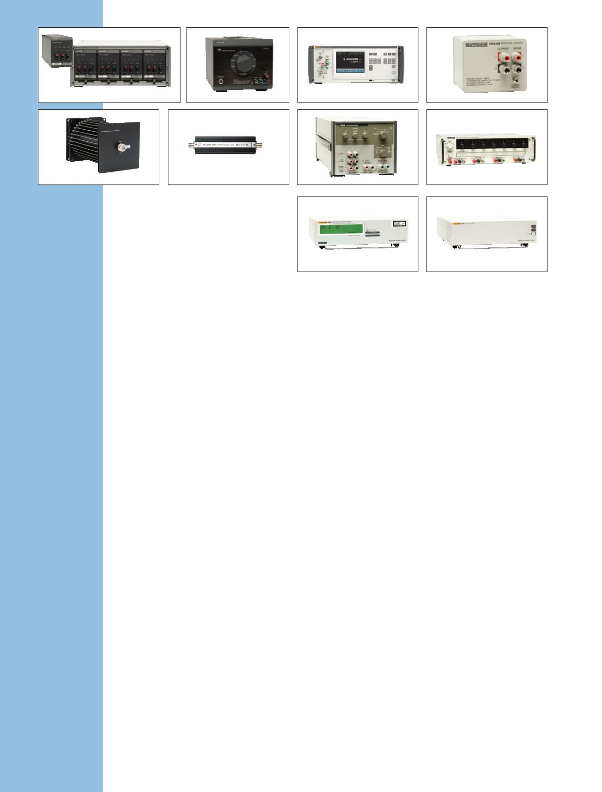

Widerstandsstandard 742A
Hochgenauer Arbeitsstandard für
Vor-Ort-Widerstandskalibrierung.
•
Kleine und robuste Standard-
widerstände mit sechmonatiger
Stabilität bis 2,5 ppm
•
Verwendung im Freien möglich,
deshalb keine Öl- oder Luftbäder
erforderlich
•
Betriebsbereich 18 °C bis 28 °C
•
Standardwerte von 1 Ohm bis
100 Megaohm
Präzisions-Stromshunts A40B
Präzisionsweichen mit niedriger
Induktanz für Gleichstrom- und
Wechselstrommesstechnik.
•
Vereinfacht die Kalibrierungs-
überprüfung von Präzisi-
onskalibratoren und Stromquellen
•
Shunts, die für Ströme von 1 mA
bis 100 A ausgelegt sind
•
Verwendbar von Gleichstrom bis
100 kHz
•
Ultraniedrige Phasenverschie-
bung zur Unterstützung von
Messinstrumenten für die
Spannungsqualität
Stromshunts A40/A40A
•
Wechselstromübertragungs-
messungen von 2,5 mA bis 20 A
•
Frequenzbereich 5 Hz bis
100 kHz
Referenzteiler 752A
Setzen den Maßstab für
Verhältnisgenauigkeit und
Bedienungsfreundlichkeit.
•
Normal zur Kalibrierung von
Kalibratoren der Serie 57xx
•
10:1- und 100:1-Teilerausgänge
•
Ausgangsunsicherheit 0,2 ppm
und 0,5 ppm
•
Integrierte Kalibrierbrücke
732B/734A
A40B
792A
A40/A40A
5790A
752A
910/910R
742A
720A
908/909
Elektrische
Normale
DC Referenz- und
Übertragungsstandards
732B/734A
Die einfache Art, um Ihre Spannung
aufrechtzuerhalten und zu verteilen.
•
Der primäre Standard für
die Rückführbarkeit von
DC-Spannung auf besser als
1 ppm
•
Alle vier Normale sind
mechanisch und elektrisch völlig
unabhängig (734A)
•
Stromversorgung per Batterie für
einfachen Versand
Übertragungsstadard 792A
AC/DC
Unterstützung für Ihre
höchsten Anforderungen an
AC-Rückführbarkeit.
•
Ein primärer Standard,
der schnell, genau und
benutzerfreundlich ist
•
Vollständig rückführbare
Leistung mit Rückführbarkeit
von Gleichstrom-Wechselstrom-
Differenzen auf besser als 10 ppm
•
Neun Bereiche von
22 mV bis 1.000 V (mit
Außenbereichswiderstand)
Messnormale 5790A AC
Automatisierte Gleichstrommessung
mit Präzision, die
benutzerfreundlich ist.
•
Direkte AC-Messungen
bis 22 ppm oder
Gleichstrom-Wechselstrom-
Differenzmessungen bis 15 ppm
•
Betrieb wie digitales Voltmeter
mit vollautomatischer
Bereichswahl, das den besten
Spannungsbereich für die
Messung auswählt, die Sie
durchführen
•
Robuster 1.200 V-Eingangsschutz
bei allen Spannungsbereichen
•
Optionale
30 MHz-Breitbandmessung
Kelvin-Varley-
Spannungsteiler 720A
Ein primärer Standard für
Verhältnismessungen.
•
0,1 ppm Auflösung, 7 Dekaden
•
0,1 ppm Eingang bei absoluter
Linearität
•
Integrierte Selbstkalibrierbrücke
GPS-gesteuerte
Frequenznormale 910/910R
Cäsiumgesteuerte Frequenznormale,
bei der GPS-Technologie und
-Konnektivität eingesetzt
wird, um eine primäre
Standardrückführbarkeit von jedem
beliebigen Standort bereitzustellen.
•
Einzigartige
Rückführbarkeitsfunktion
bedeutet, dass keine
Neukalibrierungen mehr
notwendig sind
•
Zwei Modelle mit hoher Stabilität
stehen für Ihre Anforderungen
und Ihr Budget bereit
•
Integrierte Rubidium-Atomuhr
(910R)
•
Bis zu 13 Ausgänge, dadurch
Maximierung der Kosteneffizienz
Frequenzstandards 908/909
Stabile Frequenzstandards für
Testsysteme und Kalibrierlabors.
•
Genauer Standard für „Atomuhr“
in automatisierten Testsystemen
•
Erschwinglich und sehr
kosteneffektiv
•
Entwickelt für Tragbarkeit mit
optionalem Transportgehäuse
8
Elektrische Kalibrierung